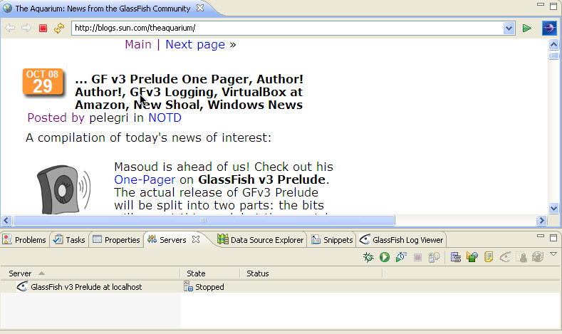

Eclipse 3.4 and GlassFish v3 Prelude integration
Download the Eclipse IDE for Java EE Developers (as of August 2008, Ganymede -
Windows 162Mb eclipse-jee-ganymede-win32.zip)
(tools for Java Developers creating JEE and Web applications, including
a Java IDE, tools for JEE and JSF, Mylyn and others...:
http://www.eclipse.org/downloads/
Install the IDE and start it, close the "Welcome" page, Then:
If you're behind a firewall, make sure you have set an SSL proxy:
Bring up Preferences, then expand General, Network Connections and fill in
the values for your SSL proxy. If you don't have a SSL proxy but a you
have a plain http proxy, be sure to check the checkbox Use this proxy server for SSL
Registering a GlassFish server to Eclipse
Once you have installed the GlassFish Plugin for Eclipse, you can
register a GlassFish server to the IDE. This is assuming you have on
your system an installation of this server. If you do not have a
GlassFish server installer, you can download one from:
In the "Servers" view, select the popup menu "New | Server ":
Navigate to the GlassFish category and select GlassFish v3 Prelude (If
you have another server type, select it. Currently, GlassFish v1,
GlassFish v2, GlassFish v3 Prelude and Sailfin v1 application servers
are supported with the Eclipse plugin).
Once the correct server is selected, press the "Next button of the wizard to enter the server location on disk.
In this step, you need to enter a correct GlassFish installation directory. For example, in the demo case, the location is
C:/Program Files/glassfishv2-prelude/glassfish.
Notice that the location C:/Program Files/glassfishv2-prelude contains
more than the glassfish application server. It contains as well JavaDB,
the Update Tool and its repository meta-data. So make sure you select
the subdirectory called "glassfish:" under C:/Program
Files/glassfishv2-prelude.
Once a correct server location is entered, the "Next" button of the wizard is enable.
The following step of the wizard has many good default values (that can
be modified later on). By default, the domain named "domain1" in the
standard domain directory is selected. Change the user name/password if
you have installed the GlassFish v3 Prelude with this option. Notice
the "Preserver Sessions Accross Redeployment" option is turned on by
default. This is a nice new feature of the GlassFish v3 Prelude
application server.
GlassFish Server Usage from the IDE
Once a new GlassFish is registered to the Eclipse IDE, you'll see
a new entry in the "Servers" view of the IDE. A popup menu is available
on this node, as well as a toolbar for useful actions like "Start",
"Debug" , " Monitor". Double clicking on the server node will also open
the Server Editor where more options can be modified.
Notice the "GlassFish Enterprise Server" popup menu entry that allows a
quick access to the GlassFish Update Center UI, the registration page,
the Aquarium Web site, The Admin console page and the log viewer for
this application server.
the GlassFish Update Center UI, the registration page and The Admin
console page will require the GlassFish server to be up and running in
order to be seen.
Here is the Aquarium page viewed in the default Eclipse browser (which is an embedded browser inside Eclipse Editor).

If you double click on the server node in the "Servers" view, the
server editor window is showing up. You can fine tune some parameters
like "Publishing". By default for GlassFish v3 Prelude, the
"Publishing" is setp to "Automatic with a 0 interval delay.
What is means is that the GlassFish plugin will an automatic
redeployment of the Web Application project as soon as you save a file
within this application. This can be a servlet change or a JSP change,
ot any class or web artifact in this application. This feature is also
called "Deploy on Save" and for most of the web applications, this can
be very fast (less than a second) with GlassFish v3 Prelude. If this is
not the behaviour you want, just select the "Never publish
automaticall" option and save your settings.
You can also point to a different existing domain or modify the "Session Preservation" feature of GlassFish v3 Prelude.
The second tab called "GlassFish Update Center" is active only when the server is up and running.
Let's click on the "Start" button (green arrow on the Servers view
toolbar) (or popup menu action) to start the GlassFish v3 Prelude
server. A new Eclipse view named "GlassFish Log Viewer" should show up.
It contains many tabs, one per server instance started by the Eclipse
IDE. The tab is called "server.log" and you can see the server log
location in the tooltip on this tab name.
Once the server is started, the "Servers" view will display the correct State in the view: "Started" and Syncronized":
Creating a new Web Application project targeting GlassFish Server
......
......
......
Changing Global Preferences for the GlassFish Server
......

Using the Help menu for GlassFish

TCP/IP Monitoring Web Applications with GlassFish
......
......
......
......
......
......
Adding a Servlet and using Session Preservation feature
......
......
......
......
......
......
Using the Debugger to debug a Servlet with GlassFish
......
Viewing the GlassFish Admin Console from Eclipse
......
Using the GlassFish v3 Prelude Update Center from Eclipse
Registrating your GlassFish installation
......
......
Adding a new Data Source and registering it to GlassFish
......
......
......
......
......
......
......
......
......
......
......

......
......
......